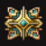

魔力+1
魔力-1
防御力+1

魔力+2
防御力+1
魔力+1
防御力+1
魔力+2
防御力+2

目次 > ゲームについて > 日本Falcom 攻略 > ZWEI II > アイテム一覧 > アクセサリー
らんの眼
ZWEI II (ツヴァイ 2、ZWEI II Plus)
| 概要 | 情報 | 攻略チャート |
| フード交換 | ペットについて | ボス戦 |
| 敵キャラ一覧 | ハンターランク | G-コロッセオ |
| アイテム一覧 | ガジェット一覧 | トレジャー一覧 |
| ダンジョン一覧 | クリアデータ特典 | Plusの追加要素 |
| ZWEI II攻略へ | 目次へ戻る |
| [ 武器、魔法 ] [ 防具 ] [ アクセサリー ] [ イベントアイテム ] [ フード ] |
| アクセサリー |
| 名前 | 画像 | 価格 | 能力 | 入手方法 |
| ピアス | 980 | 魔力+1 | ブティック <<アネット>> で購入 | |
| 首飾り | 980 | 防御力+1 | ブティック <<アネット>> で購入 | |
| アフロ | 9800 | 攻撃力+1 魔力+1 |
G-コロッセオの自動販売機(G-販売機)で購入 | |
| 腹巻き | 攻撃力+2 魔力-1 |
モーリス杯を制覇 | ||
| 足袋 | 4800 | 魔力+1 防御力+1 |
万屋本舗 <<ヒコメ>> で購入 | |
| マフラー | |
7800 | 攻撃力-1 魔力+2 防御力+1 |
ブティック <<アネット>> で購入 |
| リボン | 24800 | 攻撃力+1 魔力+1 防御力+1 |
ブティック <<アネット>> で購入 | |
| 王冠 | 攻撃力+2 魔力+2 防御力+2 |
ペンギン杯を制覇 | ||
| 戦士の手袋 | |
攻撃力+2 | アウロン大鉄塔「灼点高炉(LV.11)」の宝箱 | |
| 勇士の手袋 | 攻撃力+4 | ルナ＝ムンドゥス「封印庭園(LV.24)」の宝箱 | ||
| 学者の帽子 | 魔力+2 | セクンドゥム廃坑「ゴーレム工房(LV.4)」の宝箱 | ||
| 賢者の帽子 | 魔力+4 | ムーンブリア城「礼拝堂(LV.15)」の宝箱 | ||
| 番兵のこて | 防御力+2 | セクンドゥム廃坑「クモの巣坑道(LV.2)」の宝箱 | ||
| 騎兵のこて | 防御力+4 | 星ヶ峰「忍びの修行場(LV.17)」の宝箱 | ||
| 偉人の襟巻 | HP+10(最大120) | 金闇の「金の沼地（LV.12)」森の宝箱 | ||
| 仙人の襟巻 | HP+20(最大120) | 螺旋要塞メルセデク「螺旋中枢(LV.28)」の宝箱 | ||
| 名前 | 画像 | 価格 | 能力 | 入手方法 |
| 名前 | 画像 | 価格 | 能力 | 入手方法 |
| 健康祈願のお守り | 毒を無効化 毒状態を解除 |
ウェスタン杯を制覇 | ||
| 停滞防止のお守り |  |
麻痺を無効化 麻痺状態を解除 |
ダンジョンハンターに昇格 | |
| 精神安定のお守り | 混乱を無効化 混乱状態を解除 |
魔法少女杯を制覇 | ||
| 呪い返しのお守り | 呪縛を無効化 呪縛状態を解除 |
ベテランハンターに昇格 | ||
| グルメなおハシ | フードを食べたときのHP回復量が増える | ワイルドハンターに昇格 | ||
| セレブなお財布 | 手に入るペンネの額が増える | ゴージャスハンターに昇格 | ||
| サンタなおヒゲ |  |
敵がアイテム(フード、フィギュア)を落としやすくなる | ビューティハンターに昇格 | |
| イナセなお面 |  |
装備中、店の売り物の価格が半額になる | アルティメットハンターに昇格 | |
| アンチボム | 爆弾のダメージを無効化 | ちびっこ忍者杯を制覇 | ||
| アンチトラップ |  | 大砲やトゲなどからのダメージを無効化 落下、毒沼などは効果なし |
マーベラスハンターに昇格 | |
| 兄貴のハチマキ | 体力が少ないときほど武器の攻撃力が上がる | 武装お嬢様杯を制覇 | ||
| 姉御のテヌグイ |  |
体力が最大の時、魔力を消費せずに魔法が使える | スペシャルハンターに昇格 | |
| ソロモンリング | 動物と話ができる | チェスクが欲しがっているものをあげる | ||
| 身代わりリング | 10000 | 装備していると戦闘不能になっても復活できるが、一度使うと壊れる | G-コロッセオの自動販売機(G-販売機)で購入 | |
| 人狼リング | 攻撃力+3 魔力+3 防御力+3 装備すると毒、麻痺、混乱、呪縛状態になる |
ムーンブリア城「城館区画(LV.13)」の宝箱 | ||
| 早送リング | 98000 | プレイヤーの移動速度が上がる | 妖精の店 <<フェアリーマート>> で購入 | |
| 名前 | 画像 | 価格 | 能力 | 入手方法 |
| アクセスロット |
| 名前 | 価格 | 入手方法 |
| アクセスロット1 | セクンドゥム廃坑「魔法石採掘場(LV.2)」の宝箱 | |
| アクセスロット2 | オルディウム神殿「地下瞑想場（LV.7)」の宝箱 | |
| アクセスロット3 | アウロン大鉄塔「未来研究所(LV.13)」の宝箱 | |
| アクセスロット4 | 星ヶ峰「吹雪ヶ原(LV.18)」の宝箱 | |
| アクセスロット5 | ルナ＝ムンドゥス「駒の王都(LV.22)」の宝箱 | |
| アクセスロット6 | 20000 | G-コロッセオの自動販売機(G-販売機)で購入 |
| アクセスロット7 | 40000 | G-コロッセオの自動販売機(G-販売機)で購入 |
| アクセスロット8 | 80000 | G-コロッセオの自動販売機(G-販売機)で購入 |
| 名前 | 価格 | 入手方法 |
| [ 武器、魔法 ] [ 防具 ] [ アクセサリー ] [ イベントアイテム ] [ フード ] |
| 概要 | 情報 | 攻略チャート |
| フード交換 | ペットについて | ボス戦 |
| 敵キャラ一覧 | ハンターランク | G-コロッセオ |
| アイテム一覧 | ガジェット一覧 | トレジャー一覧 |
| ダンジョン一覧 | クリアデータ特典 | Plusの追加要素 |
| ページの上部へ | ZWEI II 攻略へ | 目次へ戻る |